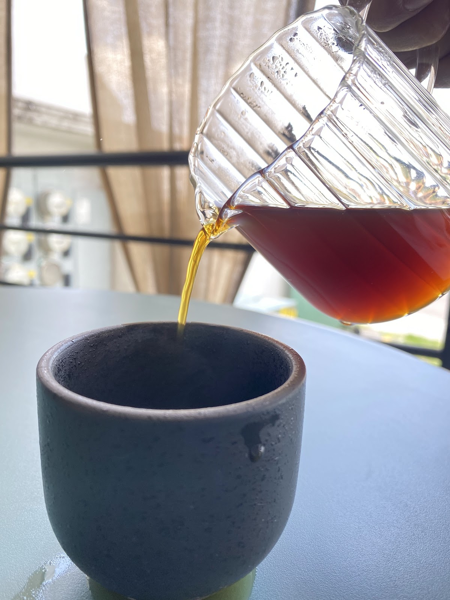
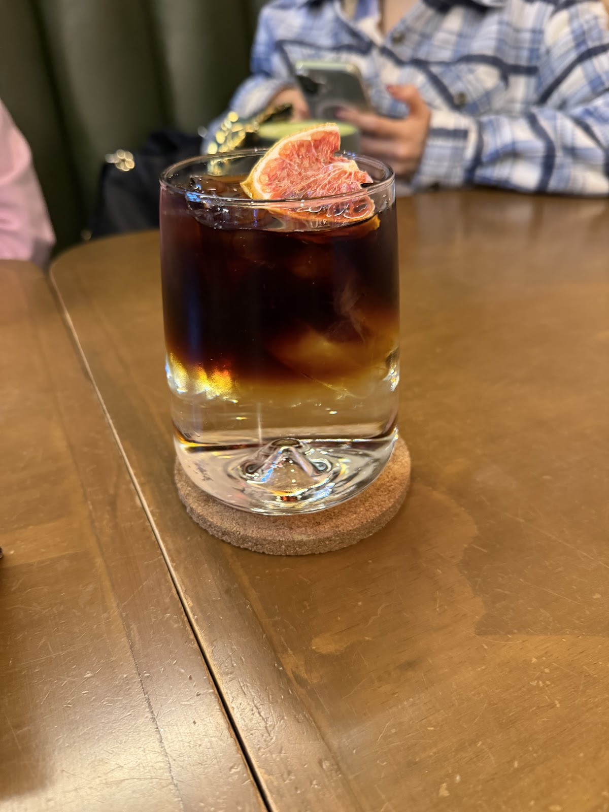
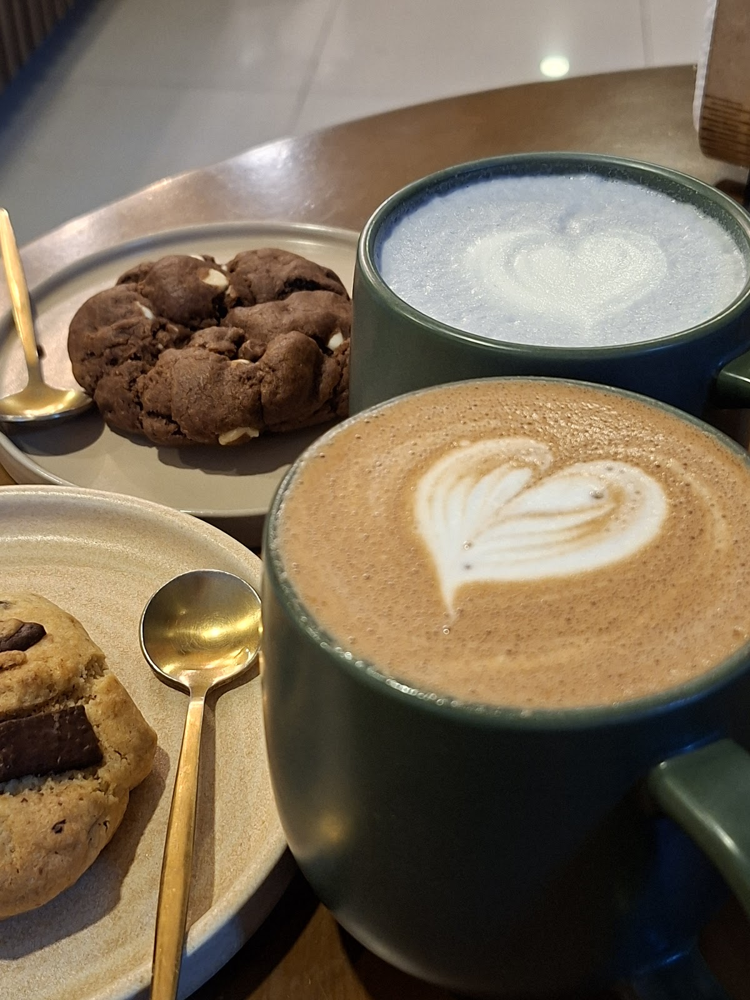

01 — Métodos
Chemex, V60, Aeropress, prensa
Elige tu filtrado. Molemos al momento y controlamos el agua para sacar lo mejor de cada origen. Café negro, honesto, para tomarse con calma.
02 — De autor
Espresso tónic & cold brew
Nuestro espresso tónic corona con toronja deshidratada: burbuja, cítrico y café frío. El cold brew, 18 horas de extracción en frío. Refrescante y distinto.
03 — Con leche
Latte, cappuccino, matcha
Latte art en cerámica cálida, cappuccino tradicional de grano tostado en casa, matcha ceremonial y nuestro café verde. Para quedarse un rato.